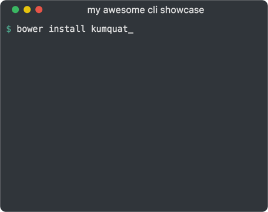

kumquat 🍊
A web showcase for your terminal apps
Getting Started
Quick start using bower
-
Install using bower
bower install kumquat -
Create
kumquat-example.html:<html> <head> <title>kumquat example</title> <link rel="stylesheet" href="bower-components/kumquat/dist/kumquat.css"> </head> <body> <div class="kumquat-terminal"> <header> <div class="btn green"></div> <div class="btn yellow"></div> <div class="btn red"></div> <div class="title">kumquat example</div> </header> <section class="terminal"> <div class="cli"> <div class="line">type<span class="cursor">_</span></div> </div> </section> </div> </body> </html> Open
kumquat-example.htmlin your browser (no server required!).
Contributing
Please read CONTRIBUTING.md for details on the code of conduct, and the process for submitting pull requests.
Versioning
kumquat uses SemVer for versioning. For the versions available, see the
tags on this repository.
Authors
- Israel Roldan - Author israelroldan
License
This project is licensed under the MIT License - see the LICENSE file for details